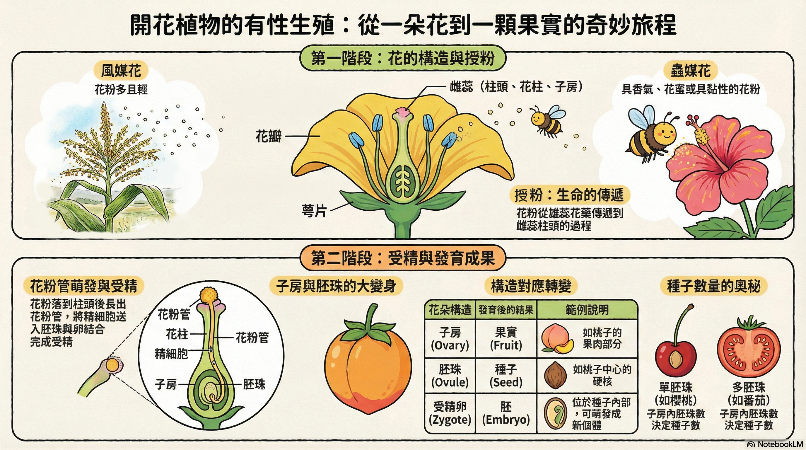

教學文本（五段）
彩色標記為關鍵字
植物進行有性生殖時，也會產生配子，行受精作用。 以開花植物為例，花、果實和種子是開花植物的生殖器官， 典型的花有萼片、花瓣、雄蕊和雌蕊， 且共同著生在花托上。
雄蕊包括花絲和花藥，花藥內含大量花粉。
花粉通常藉由風、昆蟲或鳥等媒介來傳播， 花粉落到雌蕊柱頭上的過程稱為授粉。
授粉後，花粉會萌發出花粉管， 花粉內的精細胞會經由花粉管進入雌蕊子房中的胚珠， 與胚珠內的卵結合受精。
受精後，子房膨大發育成果實， 胚珠發育成種子。 當種子傳播到適當環境中，便可萌芽長成新個體。

互動練習（四題｜類型不重複）
每題提交後會鎖定；答錯可重做本題。
1
單選題：典型的花不包含下列哪一構造？
提示：文本提到「萼片、花瓣、雄蕊和雌蕊」。
2
多選題：下列哪些可作為花粉傳播的媒介？（可複選）
請選出文本中提到的媒介。
3
下拉選單題：授粉後，花粉會萌發出哪個構造，讓精細胞能進入胚珠？
請從下拉選單選出正確答案（提示：文本第四段）。
4
排序題：請用上下箭頭把「開花植物有性生殖」的步驟排成正確順序。
完成排序後再按「檢查答案」。